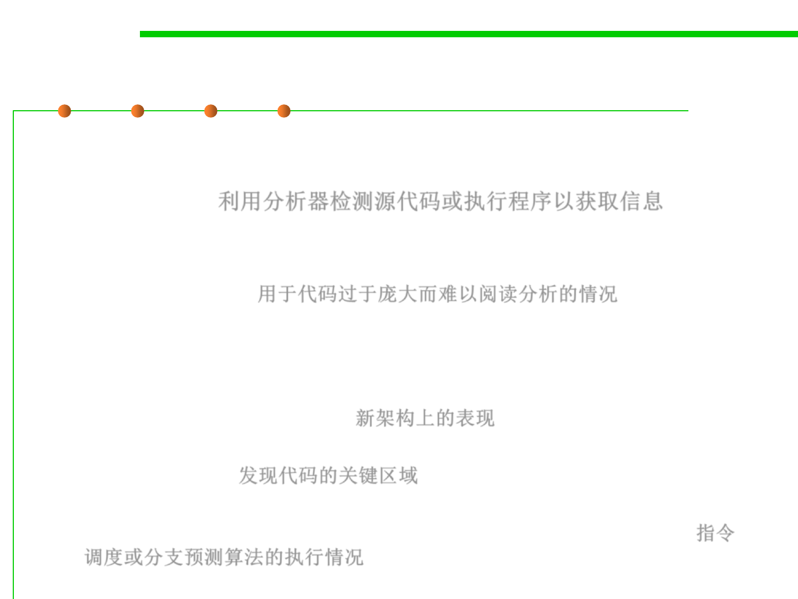

Profiler 分析器
8.2 Dynamic Program Analysis Methods and Tools
▪ Profiling is achieved by instrumenting either the program source
code or its binary executable form using a tool called a profiler (or
code profiler). 利用分析器检测源代码或执行程序以获取信息
– Use information collected during the actual execution of a program
– Can be used on programs that are too large or too complex to analyze by
reading the source 用于代码过于庞大而难以阅读分析的情况
▪ Profilers are extremely important for understanding program
behavior:
– Computer architects need such tools to evaluate how well programs will
perform on new architectures. 新架构上的表现
– Software writers need tools to analyze their programs and identify critical
sections of code. 发现代码的关键区域
– Compiler writers often use such tools to find out how well their
instruction scheduling or branch prediction algorithm is performing. 指令
调度或分支预测算法的执行情况